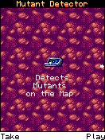
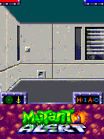

South Park and Crash had already improved the ExEn arrays, strings, fonts, dialogs and input timing. I still managed to get stuck before Mutant Alert’s first level. We needed to make the game’s actual choices easier to read.MA01
The offer.

Original optional Mutant Detector offer: Take at left, Play at right. Historical 132×176 host frame.
Open the image for the full original view.
MA90The detector screen had two original commands. PLAY went toward the game. TAKE SMS, also reached by numeric 5 there, entered an optional-service route. Our generic action button made it easy for me to pick the wrong command and think I couldn’t continue.MA02
We changed the controls to follow the current screen: START, SELECT, CONTINUE, PLAY/TAKE SMS, YES/NO, then movement and combat. The labels changed around the original keys. SMS and ranking services stayed unavailable, but their optional detours no longer needed to look like the way into the game.MA02
The read-only observer was checked at fourteen points through title, offer, SMS error, gameplay, map and quit/cancel. Every original frame digest matched the earlier build. The overlay could explain the fork without changing what the game did at it.MA04
The map was a different kind of image.
The inherited renderer also found something new: the game generated a minimap by compositing into another target. That image no longer had the decoded source-index buffer used by the existing transparency path. Honoring its palette alpha fixed the generated map while leaving ordinary decoded-image transparency intact.MA01

Original first-person level and HUD, 132×176, captured by the historical original-VM host probe.
Open the image for the full original view.
MA91Even the original help needed checking against execution. Some listed numeric directions differed from the actual EXN/platform behavior. The bridge kept the full keypad and softkeys, with ordinary labels following the observed native route rather than repairing the original text by changing game logic.MA08
The same audio edge.
The later intro-audio repair encountered the same static-buffer readiness defect documented for South Park and Crash. Original PCM needed writing before the track could become ready. The shared mechanism is visible in the records; the excerpts do not establish which title’s patch was copied into which later update.MA03SP03XC02
The retained host route reaches the original level with forward movement, turning, left strafe and map access. We could make the surrounding controls clearer and work on audio while keeping the original game’s behavior in view.MA05MA06
About these records
The offer is an original optional-service branch, not a fabricated bridge menu. The fourteen-frame comparison concerns contextual overlays around unchanged game output. Original help and observed mappings are kept distinct. Shared audio mechanism does not by itself establish patch-transfer direction. All displayed frames are historical desktop original-runtime output; later phone listening and comfort remain separate.
The receipts
Selected report lines, investigation notes and recorded feedback. Each receipt keeps its original source and scope.
MA01 / Earlier ExEn repairs fill the foundation; the minimap adds alphaCheckpoint investigation notes
Source: 25-Mutant_Alert_ExEn_Bridge_v0.1.2_PRIVATE_CHECKPOINT.zip / Mutant_Alert_ExEn_Bridge_v0.1.2_PRIVATE/native/README.md · selected lines 1–15
# Mutant Alert ExEn runtime Portable ExEn VM adapted from Handyplay / mohamedahmed166e, pinned upstream 460b149302e9a52523bc314a37efabbee9f3d666, AGPL-3.0. See LICENSE-AGPL-3.0.txt. Reuses the private Crash/South Park full-width arrays, String conversion, original-font separation, canonical pen color, dialog and FIFO/timing repairs. Graphics.drawImage now honors original palette-alpha on composited render targets without source index buffers. This corrects the original game's generated 240x120 minimap; decoded images retain index-based transparency unchanged. No original bytecode/assets/logic or progression is patched. Zig 0.15.2. C ABI keeps internal banjo_* symbols for compatibility, with no Banjo gameplay logic. JNI identity is com.wakka.mutantalertexen. The Android ARM64 library uses 16 KiB segments and no external dynamic dependencies. Host JNI build for Android framework checks: zig build -Doptimize=ReleaseFast -Djni=true Original platform classes and 5x8 font are runtime inputs, never embedded in ELF.
MA90 / Historical image / The original Mutant Detector offer with Take and PlayHistorical host capture
Source: Mutant_Alert_ExEn_Bridge_v0.1.2_PRIVATE/evidence/acceptance/06_optional_detector_offer.png
Original game pixels retained from the stated historical host check. No physical-phone capture is implied.
Unchanged historical image. Source member: Mutant_Alert_ExEn_Bridge_v0.1.2_PRIVATE/evidence/acceptance/06_optional_detector_offer.png SHA-256: db486c6ac7458ac6c9ea495c3309bf9498f522dd15db75c8fe3404d0d0f22ba3 Original optional Mutant Detector offer: Take at left, Play at right. Historical 132×176 host frame. Scope: Historical host original-runtime framebuffer; not physical-phone output or a framework UI fixture. Visually inspected game-only, zero EXIF, unchanged bytes.
MA02 / PLAY and TAKE SMS are different original commandsCheckpoint investigation notes
Source: 25-Mutant_Alert_ExEn_Bridge_v0.1.2_PRIVATE_CHECKPOINT.zip / Mutant_Alert_ExEn_Bridge_v0.1.2_PRIVATE/README_FIRST.txt · selected lines 14–35
Normal controls follow the original active screen: - Title: large START action. - Menus: arrows and large SELECT action. - Briefings/tips: large CONTINUE action. - Original item/confirmation dialogs: PLAY / TAKE SMS or YES / NO. - Live level/map: original movement, strafe, fire, grenade and map deck. PLAY is prominent on the optional detector offer. TAKE SMS and digit 5 retain the original optional-service action. NO leaves the SMS loop. Original SMS/ranking services are unavailable; no network/SMS permissions are requested. ORIGINAL KEYPAD / D-PAD RETURN swaps controls inline. Both layouts show live original commands. Keypad 5 says START, SELECT, CONTINUE, TAKE SMS, YES or FIRE as appropriate. Original codes and physical bindings are retained. Context changes release touch contacts; registered physical holds retain their owners. The renderer continues without resetting or altering the game. D-pad UP/DOWN moves forward/backward; LEFT/RIGHT turns during gameplay. 1/7 strafe right/left,5 fires/acts,* throws,# accesses map/search. The original help incorrectly lists some movement numbers; labels follow actual original EXN/platform execution. Exact digits and both softkeys remain in keypad mode. Gameplay right softkey is QUIT MENU.
MA04 / Fourteen original frames remain identical after contextual labelsCheckpoint investigation notes
Source: 25-Mutant_Alert_ExEn_Bridge_v0.1.2_PRIVATE_CHECKPOINT.zip / Mutant_Alert_ExEn_Bridge_v0.1.2_PRIVATE/VERIFICATION.txt · selected lines 26–43
CONTEXT CONTROLS / FRAME EQUALITY — PASS A read-only native observer follows the original active Displayable and raycaster class identity. It distinguishes title, menu, text page and live level/map without modifying game heap, code, pixels or timing. The command-row observer exposes text only when its rendered row matches the visible frame. Java gives actual original commands priority. Title START; menus SELECT with arrows; briefing/tip CONTINUE; detector offer TAKE SMS / PLAY; confirmation YES / NO; live gameplay restores combat controls. Both layouts retain original bindings. Context changes clear touch contacts while physical ownership is preserved. Shared kit listeners remain intact. tools/verify_command_labels.py compares v0.1.1 and v0.1.2 frame digests at 14 checkpoints: title, main menu, play menu, briefing, detector offer, SMS question, SMS error, return to offer, tip, gameplay, map, map return, quit question and quit cancellation. Every digest matches. Context codes and Take/Play and Yes/No labels match expected original screens. The v0.1.1 host library is an external baseline input for this comparison.
MA91 / Historical image / Mutant Alert original first-person levelHistorical host capture
Source: Mutant_Alert_ExEn_Bridge_v0.1.2_PRIVATE/evidence/acceptance/08_live_level.png
Original game pixels retained from the stated historical host check. No physical-phone capture is implied.
Unchanged historical image. Source member: Mutant_Alert_ExEn_Bridge_v0.1.2_PRIVATE/evidence/acceptance/08_live_level.png SHA-256: c7f23d938abb031dfd5df3a49947ed5b891d6ca79074eee35681de7a5482ebd8 Original first-person level and HUD, 132×176, captured by the historical original-VM host probe. Scope: Historical host original-runtime framebuffer; not physical-phone output or a framework UI fixture. Visually inspected game-only, zero EXIF, unchanged bytes.
MA08 / Original help differs from observed EXN executionCheckpoint investigation notes
Source: 25-Mutant_Alert_ExEn_Bridge_v0.1.2_PRIVATE_CHECKPOINT.zip / Mutant_Alert_ExEn_Bridge_v0.1.2_PRIVATE/AGENTS.md · selected lines 5–12
Original numeric controls: forward 2, backward 8, turn right 6, turn left 4, strafe right 1, strafe left 7, fire/action 5, grenade *, map/search #. Softkeys -8 left command, -7 right command stay separately accessible. Normal D-pad UP/DOWN/LEFT/RIGHT sends 2/8/4/6 based on live game evidence. Menu navigation uses UP (2) and DOWN (8). Original help numeric directions differ from actual EXN/framework execution; use captured live evidence and preserve unmodified original bytecode. Original keypad preserves all digits and both softkeys inline.
MA03 / Original intro PCM is written before playback readinessCheckpoint investigation notes
Source: 25-Mutant_Alert_ExEn_Bridge_v0.1.2_PRIVATE_CHECKPOINT.zip / Mutant_Alert_ExEn_Bridge_v0.1.2_PRIVATE/VERIFICATION.txt · selected lines 11–24
AUDIO OUTPUT REPAIR — PASS AT ANDROID API The earlier code rejected STATE_NO_STATIC_DATA before filling a MODE_STATIC track. The repair allows that valid state, writes all original rendered PCM, requires STATE_INITIALIZED after the write, then starts playback. Original note rendering is unchanged. Robolectric API34 runs the real Activity, original VM and MonoMelody. A ShadowAudioTrack output listener captures bytes actually passed to the Android write API. A separate probe confirms initial static-track state. Assertions cover full PCM write, initialized state, playback start, zero errors, 22,050 Hz / mono / PCM16 format and non-silent output. Captured intro: 275,184 bytes / 137,592 samples / 6.24 seconds; peak 4,915. See audio-output.txt, original-intro-output.pcm and WAV. This is output API evidence, not physical AudioFlinger/speaker proof.
SP03 / The static audio buffer was rejected before samples were writtenCheckpoint investigation notes
Source: 24-South_Park_ExEn_Bridge_v0.1.2_PRIVATE_CHECKPOINT.zip / South_Park_ExEn_Bridge_v0.1.2_PRIVATE/README_FIRST.txt · selected lines 9–16
AUDIO FIX The old player rejected the normal MODE_STATIC waiting-for-data state before writing any samples. The player now accepts that state, writes native-order PCM16, verifies the entire buffer and loaded state, then starts playback. Pause/resume, stopped/replaced melodies and completed clips are handled on an independent audio worker. Reports include requests, starts, written frames, error count and the actual last failure. The original melody data and tone renderer are retained. No replacement soundtrack was added.
XC02 / A healthy empty AudioTrack was rejectedCheckpoint investigation notes
Source: 22-Crash_Bandicoot_ExEn_Bridge_v0.1.1_PRIVATE_CHECKPOINT.zip / Crash_Bandicoot_ExEn_Bridge_v0.1.1_PRIVATE/VERIFICATION.txt · selected lines 3–20
REPRODUCED ROOT CAUSE Android MODE_STATIC AudioTrack begins in STATE_NO_STATIC_DATA (2) until its first successful write. The previous code required STATE_INITIALIZED (1) before writing; it rejected a valid track and never submitted any PCM. The actual Android API34 framework reproduces the failure in evidence/audio-baseline-failure.txt using the v0.1.0 source and Crash's original melody data, without mocking the player, AudioTrack constructor, getState or write/play lifecycle. Reference: https://developer.android.com/reference/android/media/AudioTrack The platform audio output sink is supplied by Robolectric's stock native shadow; this is not a physical speaker or Android-device listening test. AUDIO REPAIR Accept a healthy waiting-for-data track. Submit the entire PCM16 buffer through the supported ByteBuffer write API. Validate accepted byte count and readiness before play. Preserve the original synthesis function exactly. Stop cancels queued work; paused tunes retain their loaded buffer; late callbacks after close are ignored. Keep the actual failure message in independent report snapshots.
MA05 / What the original host gameplay actually exercisedCheckpoint investigation notes
Source: 25-Mutant_Alert_ExEn_Bridge_v0.1.2_PRIVATE_CHECKPOINT.zip / Mutant_Alert_ExEn_Bridge_v0.1.2_PRIVATE/VERIFICATION.txt · selected lines 45–54
HOST EXECUTION — PASS WITH STATED LIMITS tools/verify_mutant.py executes the unchanged EXN through release C ABI. Title/menu/help, briefing, offer, live 3D rendering, forward movement, both turns, strafe left, simultaneous original key delivery, map, quit/cancel and exact snapshot restore pass. 3,255 ticks; zero VM faults/input FIFO overflows. One pre-existing non-fatal parseLayout BadOffsetTable warning remains; direct classfile parsing executes successfully. Three native melody requests are observed separately from output API proof. Backward/strafe-right had no visible effect at the spawn wall. Fire/grenade had no visible effect from unequipped spawn; later combat is unverified.
MA06 / Actual touch paths and report limits in the frameworkCheckpoint investigation notes
Source: 25-Mutant_Alert_ExEn_Bridge_v0.1.2_PRIVATE_CHECKPOINT.zip / Mutant_Alert_ExEn_Bridge_v0.1.2_PRIVATE/VERIFICATION.txt · selected lines 56–72
ANDROID FRAMEWORK — FIVE TESTS PASS Robolectric 4.16.1 / API34 / native graphics / actual host JNI build: 1. Original intro PCM write/playback start as described above. 2. Cold startup, aspect132:176, START in both modes, same renderer size through mode switch, portrait/landscape, physical ownership, pause/resume and Back. 3. Real touch route through SMS/retry/NO/PLAY/tip into the level; phase-specific actions, no combat deck on menus, quit/NO returns to gameplay. 4. Independent simultaneous D-pad/fire contacts, release ordering, mode-change cleanup, duplicate touch/physical ownership and context-change cleanup. 5. SAVE REPORT responds while game worker is blocked. Pending text includes original context, visible commands and audio output details. Visible buttons meet 48 dp in checked portrait/landscape layouts; gameplay pad is square and at least 144 dp. Screenshots retained. Real MediaStore export is NOT VERIFIED: framework host lacks a Downloads provider. Pending export is checked; provider failure remains failure. All 14 Java files match the actual supplied UI kit v1.1.2 byte for byte.